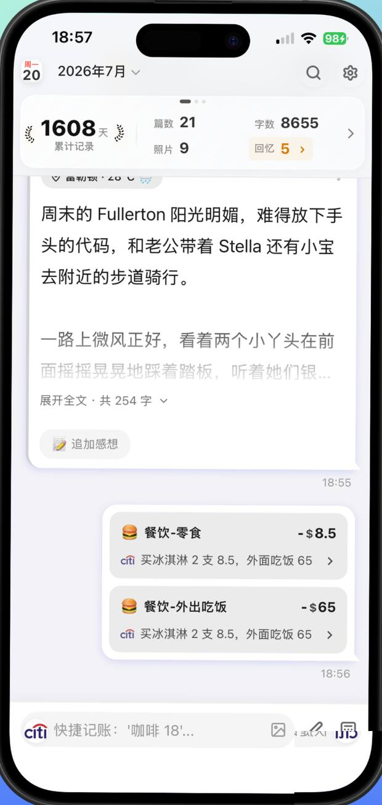
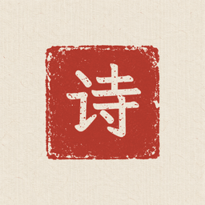

YQAJ · 一起爱记
鸡毛蒜皮
一起爱记，生活中的鸡毛蒜皮。
每天发生很多事。
一杯咖啡，一次晚饭，
路上看到的一只猫，
突然想起的一句话，
还有那些不知道该不该记下来的小事。
想记，就记下来。

我们的产品
两款小工具，各管一件事

爱记古诗词
全家一起背古诗 · 课本同步 · 离线无广告
一家人一起背古诗：小学到高中统编课本古诗按册同步，四种背诵模式加间隔复习，背过的诗不再忘。
日记 × 记账
日记和记账，本来就应该在一起
今天买了一杯咖啡。
这是今天发生的一件小事，也是一笔 ¥5.5 的消费。所以，为什么要把它分别记在两个地方？
鸡毛蒜皮，把日记和记账放在同一条时间线上。写下发生的事，顺手记下花掉的钱。生活是什么样，账本就是什么样。
今天买了一杯咖啡
14:20
今天加班到很晚，回家路上买了关东煮
关东煮 · -¥22
终于把那本书看完了
记录方式
像聊天一样记录
不用打开一个空白页面，也不用想今天应该写些什么。就像和朋友聊天一样，想到什么就说什么。
今天吃了什么、去了哪里、买了什么，甚至只是随手拍的一张照片。一条一条留下来，就够了。
回忆
不是什么都值得记录
但很多年以后，你会发现真正想看的，
恰恰是那些当时觉得无关紧要的小事
去年今天吃过的那家餐厅。
三年前买过的那件东西。
某一天随手拍下的照片。
还有当时写下的一句话。
那些鸡毛蒜皮，后来都成了生活。
想找的时候，也能找到
记过的东西越来越多，也不用担心找不到。按日期、关键词、标签，或者直接搜索。
看看某一天，某一个月，甚至很多年前的自己。你的生活，应该属于你自己。
那年今日
搜索
日历
图片 / 语音
简单一点，刚刚好
没有复杂的分类。没有一大堆必须填写的项目。
想写日记，就写日记。想记一笔账，就记一笔账。想拍照，就拍照。
记录生活，不应该成为生活的负担。
爱记古诗词
爱记古诗词
全家一起背古诗，背过的诗不再忘。
小学到高中统编语文课本的古诗按册列出，一键加入背诵。四种背诵模式由易到难，按遗忘规律安排复习时间。
完全离线可用，无广告，无需注册，不收集任何个人数据。
全家一起背
一台手机可添加多位家庭成员，各自记录进度；连续打卡，每日提醒。
科学背诵
熟读、首字、填空、默背四种模式，间隔复习到期自动提醒。
课本同步
统编版小学至高中 23 册 295 篇，按册列出，一键把整册加入背诵。
真人感朗诵
课本与启蒙古诗配有朗诵音频，多音字逐字人工审读，可调语速。
一个认真记录生活的小工具。
联系我们：ming@woabc.com
Made with care.